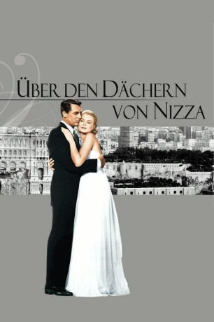
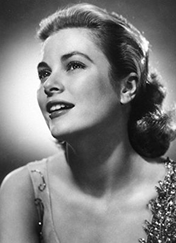
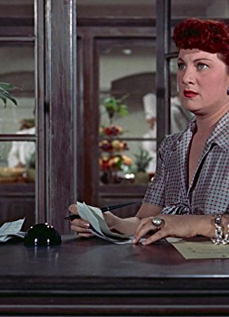

#3065 Hitchcock - Über den Dächern von Nizza
Alternativ: To Catch a Thief
Auszeichnungen: 1 Oscars gewonnen für 2 Oscars nominiert
 
 IMDB-Wertung: 7.5 / 10
IMDB-Wertung: 7.5 / 10  Metascore: 0
Metascore: 0 
Der Meisterdieb John Robie hat sich an die französische Riviera zurückgezogen und genießt dort den Ruhestand, als sich eine Serie von Diebstählen ereignet, die nach seiner Methode verübt werden. Um seine Unschuld zu beweisen, versucht Robie, den Übeltäter zu entlarven. Dabei lernt er die Amerikanerin Frances Stevens kennen und lieben, doch die Romanze findet ein jähes Ende, als die Juwelen ihrer Mutter gestohlen werden. Im Rahmen eines Maskenballs versucht Robie den wahren Dieb zu fassen und Frances zurückzugewinnen.
Jahr: 1955
Dauer: 106 Minuten
FSK: 12
Land: USA Studio: Paramount PicturesTonspuren: DD2.0 - ,
Untertitel: Deutsch,
Auflösung: 1080p (1920x1080) Größe: 10342 MB
Genre: Thriller, Liebe, Mystery
Regisseur:  Alfred Hitchcock
Alfred Hitchcock
Drehbuch: John Michael Hayes, David Dodge, Alec Coppel
Soundtrack: Lyn Murray
Darsteller:
 Cary Grant als John Robie
Cary Grant als John Robie-  Grace Kelly als Frances Stevens
- Jessie Royce Landis als Jessie Stevens
- John Williams als H.H. Hughson
- Charles Vanel als Bertani
- Brigitte Auber als Danielle Foussard
 Franklyn Farnum als Party Guest , uncredited
Franklyn Farnum als Party Guest , uncredited Alfred Hitchcock als Man Sitting Next to John Robie on Bus , uncredited
Alfred Hitchcock als Man Sitting Next to John Robie on Bus , uncredited Barry Norton als Frenchman , uncredited
Barry Norton als Frenchman , uncredited- Jean Martinelli als Foussard
- Georgette Anys als Germaine
- George Adrian als Detective , uncredited
- John Alderson als Detective at the Costume Ball , uncredited
- Martha Bamattre als Kitchen Helper , uncredited
- René Blancard als Commissaire Lepic , uncredited
- Eugene Borden als French Waiter , uncredited
- Nina Borget als Frenchwoman , uncredited
- John Breen als Party Guest , uncredited
- Margaret Brewster als Cold-cream Woman , uncredited
- Ralph Brooks als Casino Patron , uncredited
- Lewis Charles als Man with Milk in Kitchen , uncredited
- Jack Chefe als Hotel Security , uncredited
- Frank Chelland als Chef , uncredited
- Beulah Christian als Hotel Guest , uncredited
- Wilson Cornell als Shepherd , uncredited
- Reinie Costello als Spanish Girl , uncredited
- Paul Cristo als Hotel Security , uncredited
- William 'Wee Willie' Davis als Big Man in Kitchen , uncredited
-  Dominique Davray als Antoinette , uncredited
- Louise De Carlo als Spanish Girl , uncredited
- Guy De Vestel als Detective , uncredited
- Gloria Dee als Persian Slave Girl , uncredited
 George DeNormand als Detective , uncredited
George DeNormand als Detective , uncredited- Kathleen Desmond als French Shepherdess , uncredited
- Lala Detolly als French Queen , uncredited
 Alphonso DuBois als Casino Patron , uncredited
Alphonso DuBois als Casino Patron , uncredited- Dolores Ellsworth als Persian Girl , uncredited
- George Ellsworth als Shepherd , uncredited
- Nestor Eristoff als Party Guest , uncredited
 Bess Flowers als Woman at Costume Ball , uncredited
Bess Flowers als Woman at Costume Ball , uncredited- Russell Gaige als Mr. Sanford , uncredited
 Steven Geray als Hotel Desk Clerk , uncredited
Steven Geray als Hotel Desk Clerk , uncredited Art Gilmore als Trailer Narrator , uncredited
Art Gilmore als Trailer Narrator , uncredited- Michael Hadlow als Monaco Policeman , uncredited
- Lars Hensen als Party Guest , uncredited
- Gladys Holland als Elegant French Woman , uncredited
- Jeshurun Howard als Boy , uncredited
- Jean Hébey als Police Inspector Mercier , uncredited
- Beverly Ruth Jordan als French Shepherdess , uncredited
- Fred Kelsey als Party Guest , uncredited
Datei: X:\Person\Hitchcock\Hitchcock - Über den Dächern von Nizza (1955, FSK12, 1920x1080).mkv seit 20.01.2016
Festplatte: HD Collection-7+mehr(A-Z)+Person
 Es gibt insgesamt 25 Filme in der Gruppe 'Person\Hitchcock'
Es gibt insgesamt 25 Filme in der Gruppe 'Person\Hitchcock'